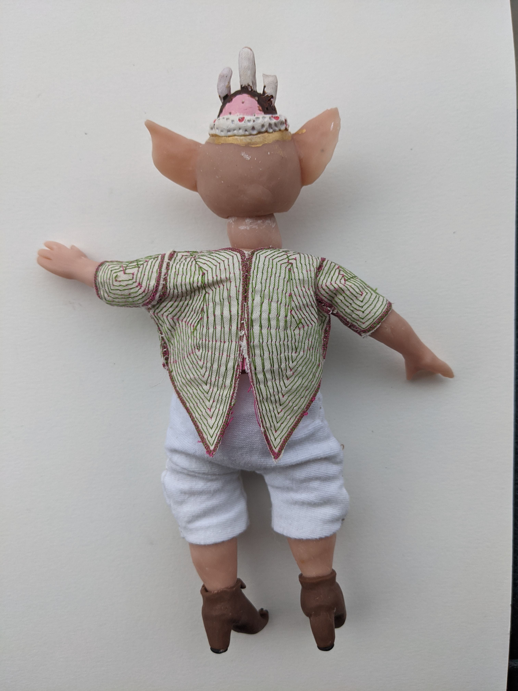
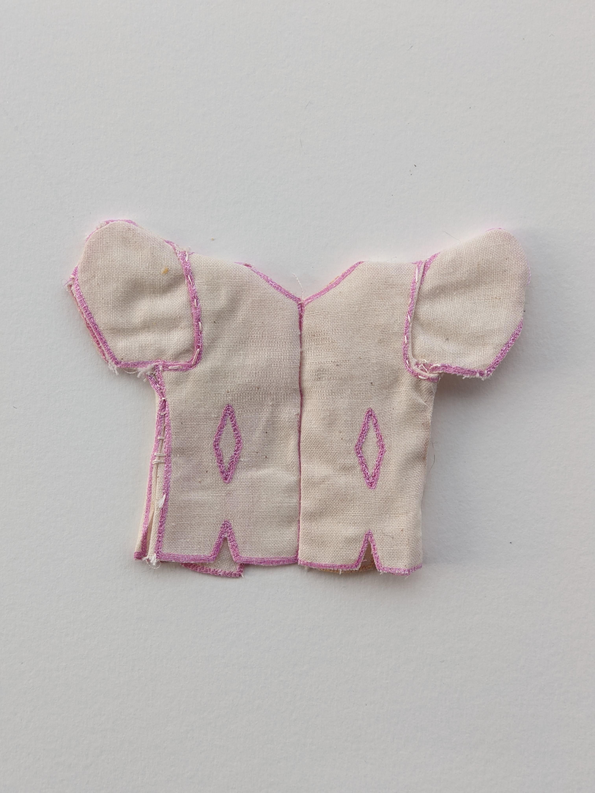
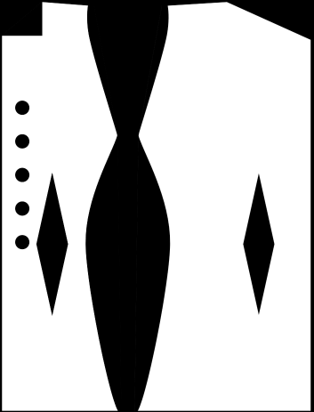

tiny generated overcoat patterns made with p5js and rendered through PEmbdoider
This project uses PEmbroider and P5js to create infinite coats to clothe my small friend. Using parameters and randomness, you can create and alter patterns and assemble them in real life.
This sketch generates full coat patterns which can be pulled into PEmbroider. the features section has more detail on different coat options
Assembly
Assembly Process
Step 1: Run generator till happy with pattern
Step 2: load pattern into PEmbroider, must have an outline, but fill is optional. Image is scaled
Step 3: Export embroidery file and Embroider on machine
Step 4: cut out and sew pattern
Step 5: trim extra fabric and use fray-check or clear nail polish to stop edges from fraying
step 6: put coat onto small friend
Example
Generated Pattern (layout has been altered manualy)
Preview of file generated with PEmbroider
Embroidered file cut out
Embroiderey sewn together
What to sew to what
Lines of the same color in the picture above are to be sewn together
Coats
Coat One
This coat is long, has a curved neckline, a stright side seam, and a perlin orange pattern
Coat Two
This coat is long, has a curved neckline, curved side seam, and a hatched blue pattern
Coat Three
This coat is very short, has a light green satin fill, a curved neckline, a dart at the upper back, and one button
Coat Four
This coat is short, has a scooped neck, a dart in the back, and a curved neckline, in a light pink satin fill
Coat Five
This coat has a forest green satin fill, lapels, sort sleeves, and back waist darts left as decorative elements
Coat Six
This coat has a blue perlin fill, has waist darts in the back, and long slightly flared seams
Coat Seven
This coat has a pink and green concentric pattern, coattails, short sleeves, and a button

Same Pattern but rendered in orange with a parallel stitch, and without sleeves
Coat Eight
This coat has pink accents, puffed sleeves, buttons, and darts on the bottom, as well as waist darts on the front and back that are left as decorative diamonds.

Coat Nine
this coat has a purple satin fill with a golden sine wave accent.
Or wear multiple coats
Features
Neckline
Neckline can be square, curved, or straight. Either of these types can aditionally have a scooped neck.
Only straight necklines without scoops can have lapels.
Lapels
Lapels can either be triangles, or have a small cutout
Darts
Patterns can have waist darts in front or back, bottom darts in the front or back, and a neck dart in the back. Waist darts can be sewn to make fabric tighter around waist, or left as a decorative pattern. Bottom darts can be cut out to allow for the bottom to flare, sewed together to tighten the bottom, or left as decoration.

Side Seam
Pattern sides can either be straight, or have a curve
Buttons
Pattern can have buttons on both side, or on only one side of the coat. number of buttons, spacing, and button size are randomized.
Sleeves
Sleeves can be long or short, tapered, normal or flared, and either be puffed at the shouler or not.